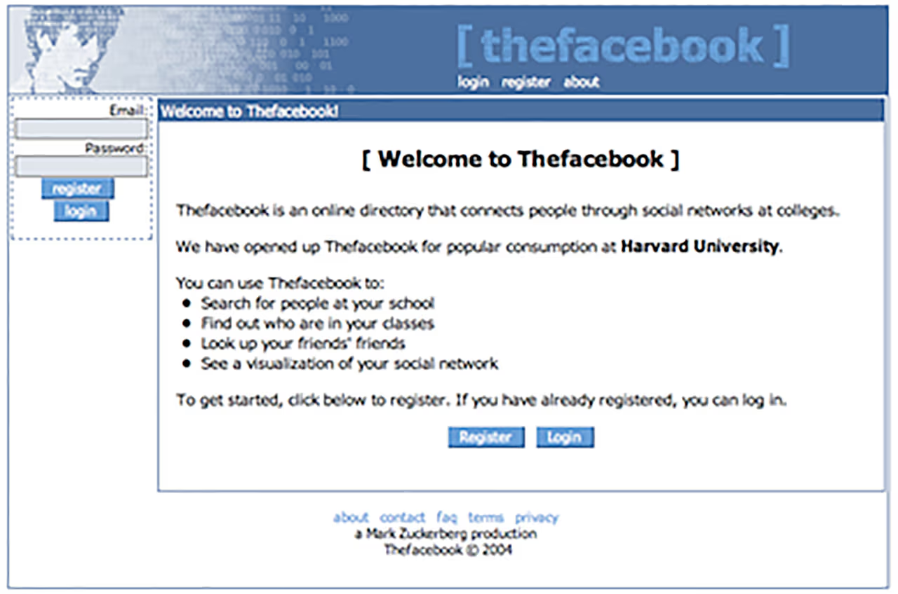

Historia de Internet - Línea del Tiempo
Desde ARPA hasta la era de la nube

Eventos Relacionados
| 1998 - Google | 1995 - Internet Comercial | 2007 - Internet Móvil | 2010 - Era de la Nube |
2004 – FacebookEl 4 de febrero de 2004, Mark Zuckerberg, un estudiante de segundo año de Harvard de 19 años, lanzó "TheFacebook" desde su dormitorio universitario. Inicialmente, el sitio estaba restringido exclusivamente a estudiantes de Harvard con direcciones de correo electrónico de harvard.edu. El concepto era simple pero revolucionario: crear perfiles en línea con fotos, información personal, y conectar con otros estudiantes de la universidad en una red social digital. La idea de Facebook no surgió en el vacío. Ya existían sitios de redes sociales como Friendster (2002) y MySpace (2003), pero Facebook introdujo características distintivas que lo hicieron único. Primero, requería que los usuarios usaran sus nombres reales, no seudónimos, creando un sentido de autenticidad. Segundo, inicialmente limitó el acceso a estudiantes universitarios, creando un ambiente exclusivo y "cool". Tercero, enfatizaba conexiones con personas que ya conocías en la vida real, no con extraños al azar. Facebook transformó fundamentalmente cómo las personas se comunican y comparten información. Introdujo el "News Feed" en 2006, que mostraba actualizaciones de amigos en tiempo real. El botón "Me gusta" llegó en 2009, creando una nueva forma de interacción social. La plataforma se convirtió en un espacio donde las personas compartían momentos de sus vidas, organizaban eventos, creaban comunidades, e incluso hacían activismo político. Para 2012, Facebook alcanzó mil millones de usuarios activos, convirtiéndose en la red social más grande del mundo. Hoy, con más de 3 mil millones de usuarios, Meta (la empresa matriz de Facebook) ha definido la era de las redes sociales y cambiado permanentemente la forma en que la humanidad se conecta.  🔗 Fuente: about.fb.com/company-info |